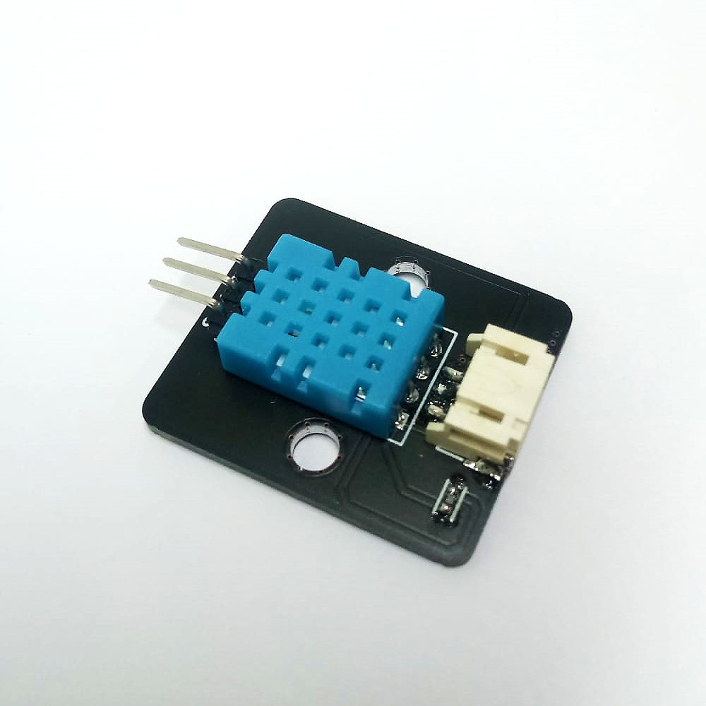
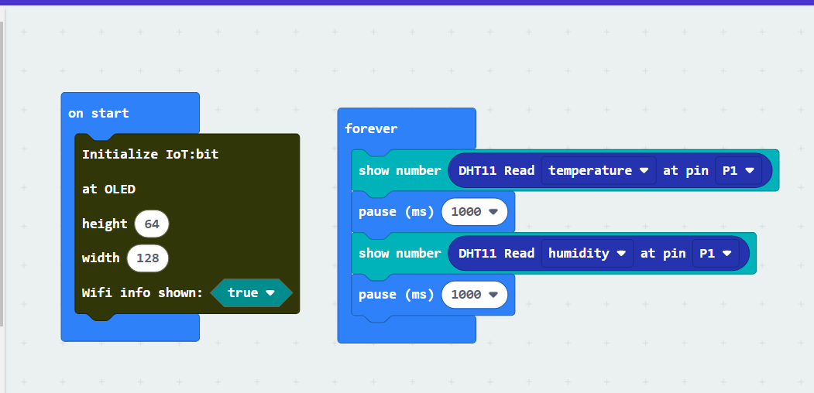
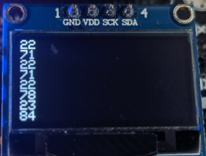

1. DHT11¶

1.1. Introduction¶
DHT11 is a commonly used sensor to detect the humidity and temperature in a lot of STEM project, it contain different advantage such low cost, easy to use and digital output.
1.2. The principle¶
The DHT11 contain two major components to detect humidity and temperature respectively.
The first component is using the Conductivity to measure the environment humidity. When humidity is changing, the polymer between two electrodes will change the conductivity, causing the resistance between electrodes drop or rise. The chip on DHT11 will use it to determine correct humidity.

For the second component on DHT11, it is a Negative Temperature Coefficient(NTC) thermistor, when the temperature is rising, the resistance will decrease as follow. The chip will use that to determine the environment temperature.

1.3. Specification¶
Supply Voltage: 3.3V to 5V
Range of Temperature reading: 0-50°C with +- 2°C accuracy
Range of Humidity reading: 20%~80% with +- 5% accuracy
Sampling Rate: 1Hz
1.4. Pinout Diagram¶
| Pin | Function |
|---|---|
| G | Ground |
| V | Voltage Supply |
| S | Signal Output(Digital) |

1.6. Quick to Start/Sample¶
Connect the DHT11 to development board (direct plugin or using wire)

Open Makecode, using the https://github.com/smarthon/pxt-smartcity PXT
After Initial the OLED, show the temperature and humidity on the OLED 
1.7. Result¶
The Room Temperature and Humidity showing on the OLED screen 
1.8. FAQ¶
Q:Why the mirco:bit program crashed after I use the DHT11 function in PXT?
A: The Sampling rate of the DHT11 hardware is 1Hz, means each time of reading should wait for at least 1 second, and according to official datasheet, 2 second is better, otherwise the data stream between the DHT11 and micro:bit will be corrupted.
Also, the function in the PXT using polling method to get the data, so the corrupted data stream may lead to undetermined state, it may crash the micro:bit program.
Q: Why the DHT11 have delay?
A: The DHT11 required some time to make the reaction, form the official datasheet, the minimum response time of the Temperature and Humidity is 10 second and 6 second respectively.